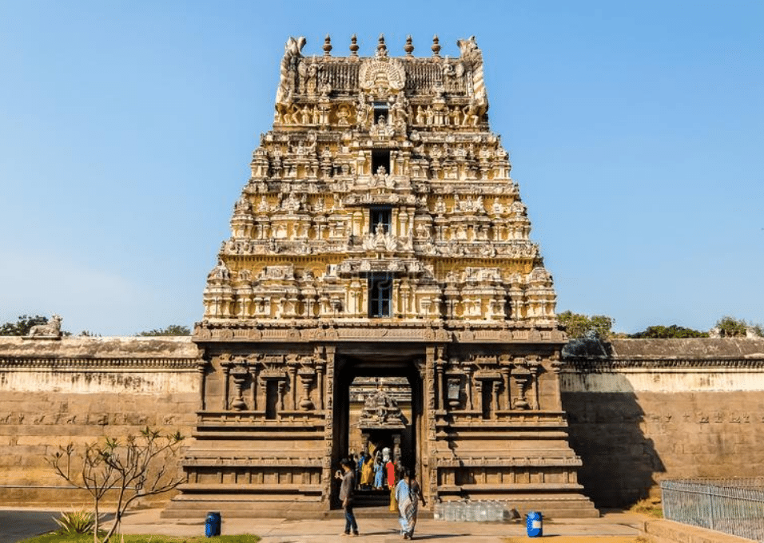

JALAKANDESHWARAR TEMPLE
Jalakandeswarar Temple: A Sacred Gem in the Heart of Vellore

The Jalakandeswarar Temple is a beautiful and historically significant temple located within the Vellore Fort complex in Vellore, Tamil Nadu. Dedicated to Lord Shiva, worshipped here as Jalakandeswarar (meaning “Lord of the Water”), the temple is a striking example of Dravidian architecture. It was built during the Vijayanagara period in the 16th century, and its intricate carvings, towering gopuram (gateway tower), and stone sculptures reflect the rich artistic heritage of that era.
One of the unique features of the temple is that it is situated at a lower level than the surrounding moat, which is believed to have once filled with water—hence the name Jalakandeswarar. The sanctum sanctorum (garbhagriha) houses a majestic Shiva lingam, and the temple is adorned with detailed carvings of gods, goddesses, dancers, and mythical creatures.
The temple is not only a place of worship but also a cultural landmark. It remained closed for many years during colonial times but was reopened to the public in the 1980s after efforts by local communities. Today, it is an active place of devotion and draws both pilgrims and tourists for its spiritual ambiance and architectural grandeur.
The temple stands as a testament to the religious, artistic, and historical legacy of South India, making it a must-visit spot for anyone traveling to Vellore.